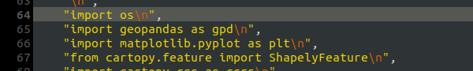
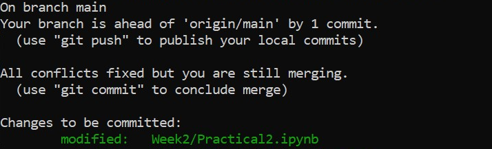

practicals
To get started with the exercises, make sure that you’ve followed the setup instructions - if you haven’t, you will have a difficult time getting started on the exercises.
There is also a  available, which will allow you to run the exercises remotely via your web browser. It may take some
time to set up, particularly if it’s been a while since anyone has used the link, but it should eventually work.
available, which will allow you to run the exercises remotely via your web browser. It may take some
time to set up, particularly if it’s been a while since anyone has used the link, but it should eventually work.
Note
The following linked pages contain instructions for getting started with each practical, as well as non-interactive overviews of the notebook.
To actually run the practicals yourself, you’ll need to go through the steps of cloning the github repository and setting up the environment outlined above, or follow the binder link to run the practicals online.
fixing merge conflicts
Warning
Jupyter notebook (.ipynb) files contain not just the markup/code for the notebook, but also any/all outputs, records of whether each cell has been executed (run), etc.
As such, it is VERY IMPORTANT for you to clear all of the outputs before you commit these files.
If you don’t, you are going to have a bad time trying to clean up the merge conflicts.
When merging different branches using git, you might see the following message:

Don’t panic. All this means is that the same file (or files) has been edited on multiple branches, and git doesn’t know which version is the “correct” one.
When you see this message, you’ll need to open the file in a text editor (e.g., NotePad, Notepad++, but not Microsoft Word).
You’re going to be looking for lines that look like this:
<<<<<<< HEAD
<some stuff>
=======
<some other stuff>
>>>>>>> cfa26ae841c9e6d252ce80239f31e4c5b568efb6
All you need to do is delete either <some stuff> or <some other stuff>, depending on which version you want to keep. So, for example, with this:
{kind=link}
we want to keep the “import os” statement. So, we delete this:
<<<<<<< HEAD
=======
as well as this:
>>>>>>> cfa26ae841c9e6d252ce80239f31e4c5b568efb6
so that we’re left with the version that we want:
{kind=link}
Once you’re done editing the file (note that there may be multiple conflicts, so you’ll need to check the file carefully!), you can add it like so:
git add <the file>
followed by:
git status
If you have successfully cleared all of the conflicts, you should see something like the following:
{kind=link}
At this point, you can commit the merge using git commit:
git commit -m "this is a commit message that makes sense"
and continue working.